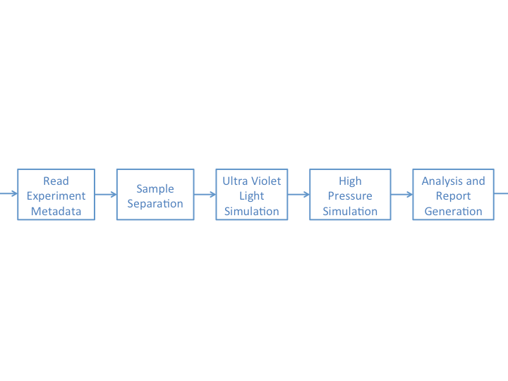
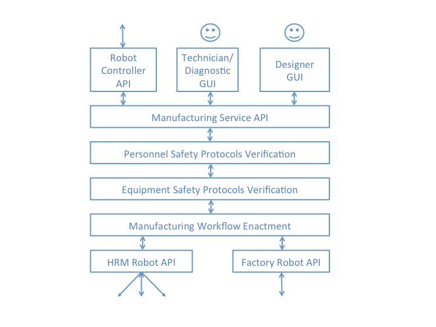

Question 1
Which of the following statements describe a benefit of using automated build scripts:
- A. Automated build scripts make the build process repeatable and reliable.
- B. Automated build scripts mean that only junior programmers need to build the system.
- C. Automated build scripts remove the need for testing a code base.
- D. Automated build scripts make it easy to correct syntax and other compilation errors in code soon after they are made.
Question 2
For what purposes do you create branches on Git?
- A. To ensure continuity of the process
- B. To keep tests and source code separate
- C. To create new features and have different lines of development
- D. None of the above
Question 3
Which of the following is true of a good test?
- A. It produces the same result regardless of context
- B. It tests for only one behaviour
- C. It gives the same outcome every time it is run
- D. All of the above
Question 4
When is it appropriate to use a free text field in a mortgage application form?
- A. When entering the mortgage product required
- B. When entering a first name
- C. When entering a salutation (Dr., Mr., Ms., etc.)
- D. All of the above
Question 5
Which of the following are reasonable methods of estimating the effort required to complete a project?
- A. Considering past performance on similar projects
- B. Considering past performance of the same team
- C. Guessing
- D. All of the above
Question 6
Which of the following is the best unit of estimation?
- A. There is no single best unit of estimation
- B. Function Points
- C. Weeks
- D. Money
Question 7
Defensive Programming helps to ensure that:
- A. Source code is readable and comprehensible
- B. Software has lower bug counts
- C. Software behaves in a predictable manner despite unexpected user actions
- D. All of above
Question 8
Which of the following examples of test Doubles would you use to provide a predictable response when testing a method to produce random numbers?
- A. Stub
- B. Fake
- C. Dummy
- D. Mock
Question 9
The software architecture shown here is an example of which of the following architectural patterns:

- A. Client-server architecture
- B. Multi-tiered architecture
- C. Peer-to-peer architecture
- D. Pipeline architecture
Question 10
New government regulations on equipment safety are being introduced, and the system shown below must change to incorporate them. The new regulations require that an additional piece of information must be captured from the HRM robots. This information is already available for the factory robot.
Which of the following answers describes the set of components in this architecture most likely to need to be changed as a result of these new requirements?

- A. Only the 'Equipment Safety Protocols Verification' component.
- B. The 'Equipment Safety Protocols Verification' component, the 'Manufacturing Workflows Enactment' component, and the 'HRM Robot API'.
- C. The 'Personnel Safety Protocols Verification' component, and all components below it in the architecture.
- D. None of the components need to change.